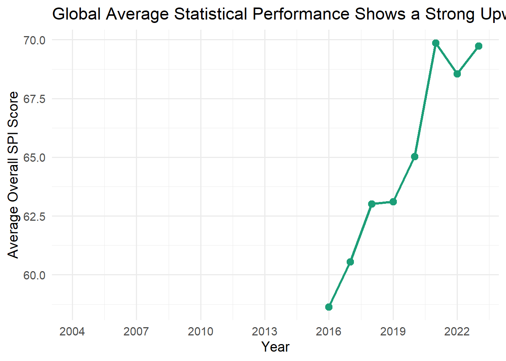
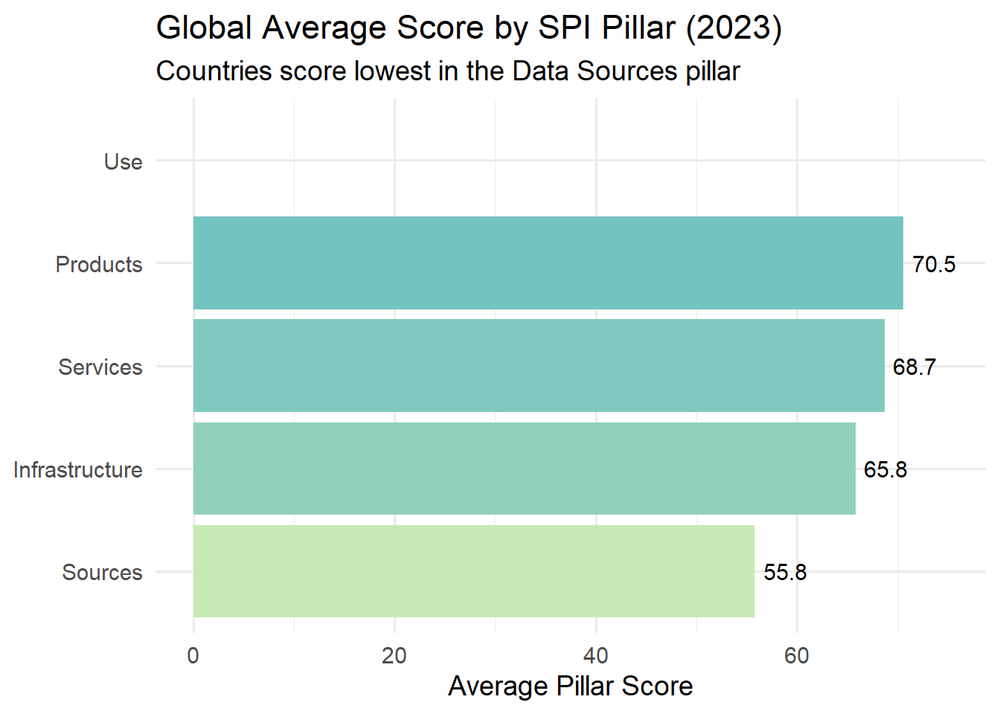

# packages for data cleaning and plottinglibrary(tidyverse) #for data manipulation (dplyr) and plotting (ggplot2)library(here) # Helps define file paths relative to the project root# output folder output_dir_path <-here("Tidy_Tuesday","Week_3","output")dir.create(output_dir_path)# Read the data file # Define the URL for the spi_indicators.csv fileurl <-"https://raw.githubusercontent.com/rfordatascience/tidytuesday/main/data/2025/2025-11-25/spi_indicators.csv"# Load the data directly from the URLspi_indicators <- readr::read_csv(url, show_col_types =FALSE)# Check head(spi_indicators)
# A tibble: 6 × 12
iso3c country region income year population overall_score data_use_score
<chr> <chr> <chr> <chr> <dbl> <dbl> <dbl> <dbl>
1 DNK Denmark Europe… High … 2023 5946952 95.3 100
2 FIN Finland Europe… High … 2023 5584264 95.1 100
3 POL Poland Europe… High … 2023 36685849 94.7 100
4 SWE Sweden Europe… High … 2023 10536632 94.4 100
5 ESP Spain Europe… High … 2023 48373336 94.3 100
6 NLD Netherlands Europe… High … 2023 17879488 94.3 100
# ℹ 4 more variables: data_services_score <dbl>, data_products_score <dbl>,
# data_sources_score <dbl>, data_infrastructure_score <dbl>
###global-trend
# Data Preparationglobal_trend <- spi_indicators %>%# grouping data by the year columngroup_by(year) %>%# Calculate the average score for all countries in that yearsummarise(avg_overall_score =mean(overall_score, na.rm =TRUE),.groups ="drop"# Ungroup data after summarizing )# Plotting: trend line plot plot_trend <- global_trend %>%# X-axis is year, Y-axis is avg_overall_scoreggplot(aes(x = year, y = avg_overall_score)) +# Add the line connecting the yearly averagesgeom_line(linewidth =1.2, color ="#1b9e77") +# Add points at each data pointgeom_point(color ="#1b9e77", size =3) +# titles and labels labs(title ="Global Average Statistical Performance Shows a Strong Upward Trend",x ="Year",y ="Average Overall SPI Score" ) +# X-axis to show clear breaksscale_x_continuous(breaks =seq(2004, 2023, 3)) +theme_minimal(base_size =14)# plotplot_trend

# Save ggsave(filename =file.path(output_dir_path, "global_trend_plot.png"),plot = plot_trend,width =8,height =5)
Performance vs. income level
# Data Preparationincome_scores <- spi_indicators %>%# Filter only most recent year's datafilter(year ==max(year, na.rm =TRUE)) %>%# Group by the income categorygroup_by(income) %>%# Calculate the mean score for each groupsummarise(mean_score =mean(overall_score, na.rm =TRUE),.groups ="drop" ) %>%# Order the income categories by their scoremutate(income = forcats::fct_reorder(income, mean_score))# Bar Plottingplot_income <- income_scores %>%# X is income, Y is mean scoreggplot(aes(x = income, y = mean_score, fill = income)) +# Add the barsgeom_col(show.legend =FALSE) +# Flip the coordinates coord_flip() +# titles and labels labs(title ="SPI Score Rises Significantly with Country Income Level",x =NULL, # No label needed for the X-axisy ="Mean Overall SPI Score" ) +# color palettescale_fill_brewer(palette ="GnBu") +theme_minimal(base_size =14)# Show the plotplot_income
# Save ggsave(filename =file.path(output_dir_path, "income_vs_score_plot.png"),plot = plot_income,width =8,height =5)
Lowest scoring pillar
# Data Preparationpillar_scores <- spi_indicators %>%filter(year ==max(year, na.rm =TRUE)) %>%# Select only the five pillar columns select(starts_with("data_")) %>%# Convert data from 'wide' to 'long' format (Pillar name in one column, score in another)pivot_longer(cols =everything(),names_to ="pillar",values_to ="score" ) %>%# Group by the pillar namegroup_by(pillar) %>%# Calculate the global mean score summarise(mean_score =mean(score, na.rm =TRUE),.groups ="drop" ) %>%#Clean Names and Order Data mutate(# Clean up names e.g., data_use_score>Data Usepillar_name =str_replace_all(pillar, "_score", "") %>%str_replace_all("data_", "") %>%str_to_title() %>%str_replace("Data", "Data "),# Order the bars by lowest to highest score pillar_name = forcats::fct_reorder(pillar_name, mean_score) )# horizontal bar Plottingplot_pillar <- pillar_scores %>%# X is pillar name, Y is mean scoreggplot(aes(x = pillar_name, y = mean_score, fill = mean_score)) +geom_col() +coord_flip() +# Flip coordinates for readability# Add the exact score number to the end of each bargeom_text(aes(label =round(mean_score, 1)), hjust =-0.2, size =4) +# titles and labels labs(title ="Global Average Score by SPI Pillar (2023)",subtitle ="Countries score lowest in the Data Sources pillar",x =NULL,y ="Average Pillar Score" ) +scale_fill_gradient(low ="#c7e9b4", high ="#41b6c4", guide ="none") +scale_y_continuous(limits =c(0, 75)) +# Consistent axis limitstheme_minimal(base_size =14)# Show the plotplot_pillar

# Save ggsave(filename =file.path(output_dir_path, "pillar_comparison_plot.png"),plot = plot_pillar,width =8,height =5)